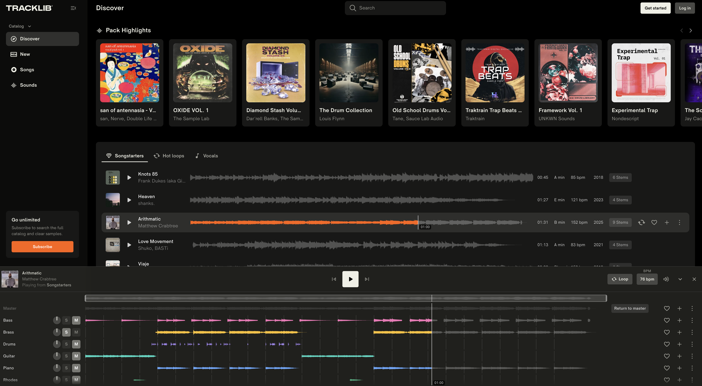
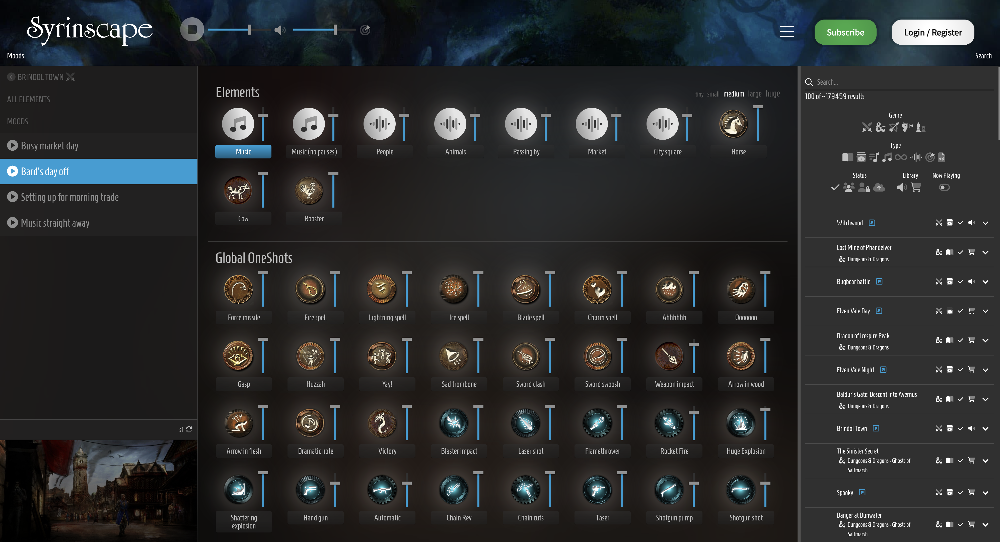
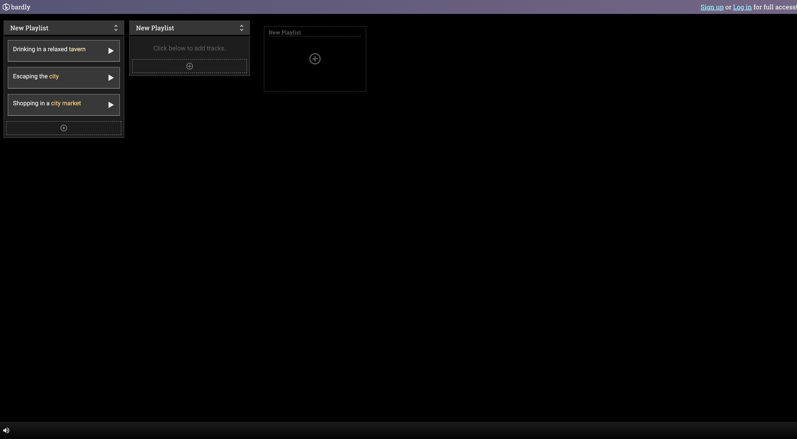

What my project allows people to do
My IDaD assignment ‘sirens.io’ will allow Dungeons and Dragons (DnD) Dungeon Masters (DMs) interact with a lightweight and dynamic soundtrack system during combat battles.
The UI will become reactive as it is linked to a campaigns character sheets. Instances of these can include:
- If a character receives healing, the music will become more triumphant and heroic.
- If a character takes damage, unstable strings and more dramatic chords will begin to creep into the soundmix.
This will be achieved by using a royalty-free song and separating its stems. sirens.io will then ease, toggle, and switch between stems accordingly, depending on the current status of the linked character sheet. For the sake of scope, I will only be demo-ing a single, fully reactive song.
The ways in which it should empower people to do so
sirens.io will remain user-friendly throughout the experience. The mostly automated system means that the website will not interrupt the flow or immersion of a real DnD campaign, as DMs can continue to focus on their narration, rulebooks, and playable characters (PCs) without losing focus. sirens.io is a facilitator for gameplay, not a hinderance.
Intellectually, the lightweight and accessible system will allow users with limited musical knowledge to still provide an immersive experience within their campaigns, as sirens.io would automate song progression, instrument mixing, and looping musical sections.
Above all, the DM will still have the final layer of control, as outlined by the ‘DM Override’ control set below.
Project framing
Wants
- One fully incorporated song, separated into its individual instrumental stems and musical stanzas
- A DM Override control set, allowing for forceful stoppage, rewind, or fast forward of the song
- A functioning link between the interface and values derived from a physical/digital PC character sheet, with values able to be updated in real time and then reflected in the instrumental progression
Non-wants
- A soundboard interface with an asset library of various SFX. This project is purely focused on the reactive directionality of the instrumentals, I am not concerned with creating an interface for foley or sound effects
- An aesthetically polished interface — this project is for use of the DM, a back-of-house tool, however it very well may end up looking like an internally used tool, simply be because it is the best way to represent the interface, its controls, and its functions
4 UI Examples
Tracklib.com - Worth

Tracklib is a website that allows users to both sample and license a wide range of songs and sounds from their audio library. Their website has a sleek way of visualising instrumental stems on different tracks, while the song plays at the same time. Its responsiveness is real-time, reacting in the same as a DAW, but coded inside a website architecture.
Conceptually, Tracklib identifies strongly with the culture of sampling from a plethora of music genres. The platform aims to empower people to find music and remix them into new sounds and genrescapes. This is demonstrated by the fact that the UX is derived heavily from the cultural practice of sampling. The core functionalities of the website UI are representative of this: one-click stem separation, real-time pitch and tempo shifting, section looping, etc.
Spotify Mix UI - information design

The Spotify Mix UI, while a great feature for playlist personalisation and customisation — allowing users to create unique transitions between any 2 songs, akin to a DJ mixing experience — has been adapted poorly to desktop view. In essence, it has been rendered as the mobile UI experience, appended onto the side of the desktop viewport.
Visually, this results in a very cramped display: a poor display of information design. The UI ultimately fails to present the functions of the Mix feature clearly. This warrants a new, faithful re-interpretation of the desktop’s information design.
Syrinscape.com (good) - Feedback

Syrinscape is a website that comes very close to recreating the exact project I want to pursue — a wide-ranging sound system for TTRPGs, supporting both music and sound effects in tandem. In particular, its feedback it provides the user is extensive: timers to indicate an audio beginning to play, looping, and transitioning out of audibility.
Syrinscape provides users with global overrides, one such being a forceful pause of all music and sound effects. Even these controls occur smoothly, maintaining its transitional polish, not coming to a complete stop jarringly or suddenly. In doing so, it maintains clean and immersive experience for the players.
A constant informative feedback of the master volume of the sound-mix is represented by an audio waveform in the bottom left of the UI, ensuring players do not become overwhelmed sonically at any point in time.
Bardly.io - Characterisation

Bardly is a dynamic soundtrack tool, similar to SyrinScape, but with a much more stripped back interface. However, this ends up characterising the website as underdeveloped, rather than practical. Conceptually speaking, Bardly is too lightweight given the functionality it is trying to offer its users. It simply doesn’t grant the user enough information or interaction from its interface.
Many functions are invisible, which are reliant on a user’s familiarity with common UI interactions. An example of this is how there is no iconography (such as a pencil or name tag) next to a playlist name, giving no indication to the user that clicking it will allow them to edit the name of their playlist. Icons that are present in the UI do not have any tooltips or any sort of written labels attached to them.
These poor quality of life (QoL) choices would most likely deter a user from using this as a solution to their desire to integrate a dynamic soundtrack — the very context of the problem requires a more high-functioning and accessible product.
Extended Technique
For my extended technique, I want to research further into mousemove events as my extended techniques. Perhaps I can utilise in a way, where if the DM has left the software idle on their device to narrate or interact with the game board, that upon tapping or moving the mouse to resume their interaction with the website, important touch points would glow to quickly re-familiarise the user with the interface.